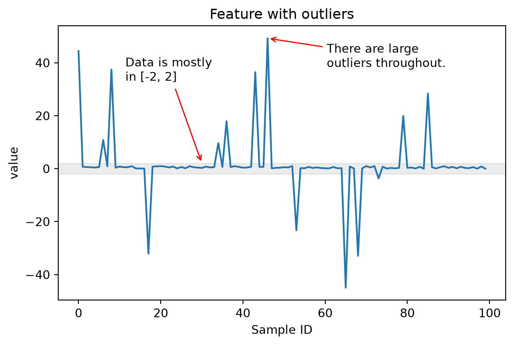

from helpers import (
generate_data_with_outliers,
plot_feature_with_outliers
)
values = generate_data_with_outliers()
plot_feature_with_outliers(values)
In previous chapters, we’ve learned how to clean and sanitize data, apply transformers to specific columns, and select columns using flexible selectors. Now we dive into the heart of feature engineering: transforming different data types (numerical, datetime, and categorical) into meaningful numeric features suitable for machine learning models.
Both the TableVectorizer and the tabular_pipeline rely on the encoders covered in this chapter to perform feature engineering. Understanding these transformers will help you build more effective pipelines and make informed decisions about how to handle different types of data.
When dealing with numerical features that contain outliers (including infinite values), standard scaling methods can be problematic. Outliers can dramatically affect the centering and scaling of the entire dataset, causing the scaled inliers to be compressed into a narrow range.
Consider this example:

In this case, most of the values are in the range [-2, 2], but there are some large outliers in the range [-40, 40] that can cause issues when the feature needs to be scaled.
The StandardScaler computes mean and standard deviation across all values. With outliers present, these statistics become unreliable, and the scaling factor can become too small, squashing inlier values.
The RobustScaler uses quantiles (typically the 25th and 75th percentiles) instead of mean/std, which makes it more resistant to outliers. However, it doesn’t bound the output values, so extreme outliers can still have very large scaled values.
The SquashingScaler combines robust centering with smooth clipping to handle outliers effectively.
It works as following:
SquashingScalerThe SquashingScaler has various advantages over traditional scalers:
StandardScaler.A disadvantage of the SquashingScaler is that it is non-invertible: The soft clipping function is smooth but cannot be exactly inverted.
When compared on data with outliers:
If we plot the impact of each scaler on the result, this is what we can see:
Datetime features are very important for many data analysis and machine learning tasks, as they often carry significant information about temporal patterns and trends. For instance, including as features the day of the week, time of day, or season can provide valuable insights for predictive modeling.
However, working with datetime data can be difficult due to the variety of formats in which dates and times are represented. Typical formats include "%Y-%m-%d", "%d/%m/%Y", and "%d %B %Y", among others. Correct parsing of these and more exotic formats is essential to avoid errors and ensure accurate feature extraction.
In this section we are going to cover how skrub can help with dealing with datetimes using to_datetime, ToDatetime, and the DatetimeEncoder.
Often, the first operation that must be done to work with datetime objects is converting the datetimes from a string representation to a proper datetime object. This is beneficial because using datetimes gives access to datetime-specific features, and allows to access the different parts of the datetime.
Skrub provides different objects to deal with the conversion problem.
ToDatetime is a single column transformer that tries to conver the given column to datetime either by relying on a user-provided format, or by guessing common formats. Since this transformer must be applied to single columns (rather than dataframes), it is typically better to use it in conjunction with ApplyToCols. Additionally, the allow_reject parameter of ApplyToCols should be set to True to avoid raising exceptions for non-datetime columns:
<class 'pandas.core.frame.DataFrame'>
RangeIndex: 4 entries, 0 to 3
Data columns (total 1 columns):
# Column Non-Null Count Dtype
--- ------ -------------- -----
0 dates 4 non-null datetime64[ns]
dtypes: datetime64[ns](1)
memory usage: 164.0 bytesto_datetime works similarly to pd.to_datetime, or the example shown above with ApplyToCols.
to_datetime is a stateless function, so it should not be used in a pipeline, because it does not guarantee consistency between fit_transform and successive transform. ApplyToCols(ToDatetime(), allow_reject=True) is a better solution for pipelines.
Finally, the standard Cleaner can be used for parsing datetimes, as it uses ToDatetime under the hood, and can take the datetime_format. As the Cleaner is a transformer, it guarantees consistency between fit_transform and transform.
Datetimes cannot be used “as-is” for training ML models, and must instead be converted to numerical features. Typically, this is done by “splitting” the datetime parts (year, month, day etc.) into separate columns, so that each column contains only one number.
Additional features may also be of interest, such as the number of seconds since epoch (which increases monotonically and gives an indication of the order of entries), whether a date is a weekday or weekend, or the day of the year.
To achieve this with standard dataframe libraries, the code looks like this:
df_enc["year"] = df_enc["dates"].dt.year
df_enc["month"] = df_enc["dates"].dt.month
df_enc["day"] = df_enc["dates"].dt.day
df_enc["weekday"] = df_enc["dates"].dt.weekday
df_enc["day_of_year"] = df_enc["dates"].dt.day_of_year
df_enc["total_seconds"] = (
df_enc["dates"] - pd.Timestamp("1970-01-01")
) // pd.Timedelta(seconds=1)
df_enc| dates | year | month | day | weekday | day_of_year | total_seconds | |
|---|---|---|---|---|---|---|---|
| 0 | 2023-01-03 | 2023 | 1 | 3 | 1 | 3 | 1672704000 |
| 1 | 2023-02-15 | 2023 | 2 | 15 | 2 | 46 | 1676419200 |
| 2 | 2023-03-27 | 2023 | 3 | 27 | 0 | 86 | 1679875200 |
| 3 | 2023-04-10 | 2023 | 4 | 10 | 0 | 100 | 1681084800 |
Skrub’s DatetimeEncoder allows to add the same features with a simpler interface. As the DatetimeEncoder is a single column transformer, we use again ApplyToCols.
The DatetimeEncoder includes various parameters to add more features to the transformed dataframe: - add_total_seconds adds the number of seconds since Epoch (1970-01-01) - add_weekday adds the day in the week (to highlight weekends, for example) - add_day_of_year adds the day in year of the datetime
| dates_year | dates_month | dates_day | dates_total_seconds | dates_weekday | dates_day_of_year | |
|---|---|---|---|---|---|---|
| 0 | 2023.0 | 1.0 | 3.0 | 1.672704e+09 | 2.0 | 3.0 |
| 1 | 2023.0 | 2.0 | 15.0 | 1.676419e+09 | 3.0 | 46.0 |
| 2 | 2023.0 | 3.0 | 27.0 | 1.679875e+09 | 1.0 | 86.0 |
| 3 | 2023.0 | 4.0 | 10.0 | 1.681085e+09 | 1.0 | 100.0 |
Periodic features are useful for training machine learning models because they capture the cyclical nature of certain data patterns. For example, features such as hours in a day or days in a week often exhibit periodic behavior. By encoding these features periodically, models can better understand and predict patterns that repeat over time, such as daily traffic trends, or seasonal variations. This ensures that the model treats the start and end of a cycle as close neighbors, improving its ability to generalize and make accurate predictions.
This can be done manually with dataframe libraries. For example, circular encoding (a.k.a., trigonometric or sin/cos encoding) can be implemented with Pandas like so:
import numpy as np
df_enc = ApplyToCols(ToDatetime(), allow_reject=True).fit_transform(df)
df_enc["day_of_year"] = df_enc["dates"].dt.day_of_year
df_enc["day_of_year_sin"] = np.sin(2 * np.pi * df_enc["day_of_year"] / 365)
df_enc["day_of_year_cos"] = np.cos(2 * np.pi * df_enc["day_of_year"] / 365)
df_enc["weekday"] = df_enc["dates"].dt.weekday
df_enc["weekday_sin"] = np.sin(2 * np.pi * df_enc["weekday"] / 7)
df_enc["weekday_cos"] = np.cos(2 * np.pi * df_enc["weekday"] / 7)
df_enc| dates | day_of_year | day_of_year_sin | day_of_year_cos | weekday | weekday_sin | weekday_cos | |
|---|---|---|---|---|---|---|---|
| 0 | 2023-01-03 | 3 | 0.051620 | 0.998667 | 1 | 0.781831 | 0.623490 |
| 1 | 2023-02-15 | 46 | 0.711657 | 0.702527 | 2 | 0.974928 | -0.222521 |
| 2 | 2023-03-27 | 86 | 0.995919 | 0.090252 | 0 | 0.000000 | 1.000000 |
| 3 | 2023-04-10 | 100 | 0.988678 | -0.150055 | 0 | 0.000000 | 1.000000 |
Alternatively, the DatetimeEncoder can add periodic features using either circular or spline encoding through the periodic_encoding parameter:
| dates_year | dates_total_seconds | dates_month_circular_0 | dates_month_circular_1 | dates_day_circular_0 | dates_day_circular_1 | day_of_year | day_of_year_sin | day_of_year_cos | weekday | weekday_sin | weekday_cos | |
|---|---|---|---|---|---|---|---|---|---|---|---|---|
| 0 | 2023.0 | 1.672704e+09 | 0.500000 | 8.660254e-01 | 5.877853e-01 | 0.809017 | 3 | 0.051620 | 0.998667 | 1 | 0.781831 | 0.623490 |
| 1 | 2023.0 | 1.676419e+09 | 0.866025 | 5.000000e-01 | 1.224647e-16 | -1.000000 | 46 | 0.711657 | 0.702527 | 2 | 0.974928 | -0.222521 |
| 2 | 2023.0 | 1.679875e+09 | 1.000000 | 6.123234e-17 | -5.877853e-01 | 0.809017 | 86 | 0.995919 | 0.090252 | 0 | 0.000000 | 1.000000 |
| 3 | 2023.0 | 1.681085e+09 | 0.866025 | -5.000000e-01 | 8.660254e-01 | -0.500000 | 100 | 0.988678 | -0.150055 | 0 | 0.000000 | 1.000000 |
Real-world datasets rarely contain only numeric values. We frequently encounter categorical features—values that belong to discrete categories, such as names, occupations, geographic locations, or clothing sizes. Text data also falls into this category, since each unique string can be considered a categorical value.
The challenge is that machine learning models require numeric input. How do we convert these categorical values into numeric features that preserve their information and enable our models to make good predictions?
This chapter explores the various strategies and tools available in skrub to encode categorical features, with an eye on choosing the best method for our specific use case.
The way we encode categorical features significantly impacts our machine learning pipeline:
Using the appropriate encoder ensures we’re making the best use of categorical information while keeping our model efficient and interpretable.
OneHotEncoder: Creates a binary indicator column for each unique category, where 1 denotes the presence of the category and 0 its absence.
Pros:
Cons:
The OneHotEncoder is used by default by the skrub TableVectorizer for categorical features with fewer than 40 unique values.
OrdinalEncoder: Assigns each category a numerical value (0, 1, 2, …).
Pros:
Cons:
All the categorical encoders in skrub are designed to encode any number of unique values using a fixed number of components: this number is controlled by the parameter n_components in each transformer.
Approach: Applies term frequency-inverse document frequency (tf-idf) vectorization to character n-grams, followed by truncated singular value decomposition (SVD) for dimensionality reduction. This method is also known as Latent Semantic Analysis.
Pros:
Cons:
Approach: Uses pretrained language models from HuggingFace Hub to generate dense vector representations of text.
Pros:
Cons:
Approach: Decomposes strings into n-grams and applies the MinHash algorithm for quick dimension reduction.
Pros:
Cons:
StringEncoder and TextEncoderApproach: Estimates latent categories by finding common n-gram patterns across values, then encodes these patterns as numeric features.
Pros:
Cons:
StringEncoder and MinHashEncoderStringEncoderEncoding features effectively is a critical step in preparing data for machine learning. The skrub library provides multiple options for handling different scenarios:
StringEncoder as a default for high-cardinality categorical features. It offers the best balance of speed, performance, and robustness across diverse datasets.OneHotEncoder for low-cardinality features (< 40 unique values) to keep the feature space manageable.TextEncoder if you’re working with true textual data (reviews, comments, descriptions) and have sufficient computational resources.GapEncoder when interpretability is important and the additional training time can be dealt with.MinHashEncoder when you need maximum speed and are working with very large datasets.For numerical features, remember to use SquashingScaler for robust handling of outliers, and for datetime features, extract meaningful components and consider periodic encoding for cyclical patterns.
The TableVectorizer integrates all these encoders automatically, dispatching columns to the appropriate encoder based on their data type and cardinality. This automation makes it easy to process mixed-type datasets efficiently while still allowing fine-grained control when needed. By default, the TableVectorizer uses the OneHotEncoder for categorical features with cardinality <= 40, and StringEncoder for categorical features with cardinality > 40.
For a comprehensive empirical comparison of categorical encoding methods, refer to the categorical encoders benchmark.
---
title: "Feature engineering with skrub"
format:
html:
toc: true
revealjs:
slide-number: true
toc: false
code-fold: false
code-tools: true
---
## Introduction
In previous chapters, we've learned how to clean and sanitize data, apply transformers
to specific columns, and select columns using flexible selectors. Now we dive into
the heart of feature engineering: transforming different data types (numerical,
datetime, and categorical) into meaningful numeric features suitable for machine
learning models.
Both the `TableVectorizer` and the `tabular_pipeline` rely on the encoders covered
in this chapter to perform feature engineering. Understanding these transformers
will help you build more effective pipelines and make informed decisions about
how to handle different types of data.
## Part 1: Scaling Numerical Features Safely
### Numerical features with outliers
When dealing with numerical features that contain outliers (including infinite
values), standard scaling methods can be problematic. Outliers can dramatically
affect the centering and scaling of the entire dataset, causing the scaled inliers
to be compressed into a narrow range.
Consider this example:
```{python}
from helpers import (
generate_data_with_outliers,
plot_feature_with_outliers
)
values = generate_data_with_outliers()
plot_feature_with_outliers(values)
```
In this case, most of the values are in the range `[-2, 2]`, but there are some
large outliers in the range `[-40, 40]` that can cause issues when the feature
needs to be scaled.
### Regular scalers and their limitations
The **StandardScaler** computes mean and standard deviation across all values.
With outliers present, these statistics become unreliable, and the scaling factor
can become too small, squashing inlier values.
The **RobustScaler** uses quantiles (typically the 25th and 75th percentiles)
instead of mean/std, which makes it more resistant to outliers. However, it
doesn't bound the output values, so extreme outliers can still have very large
scaled values.
## SquashingScaler: A robust solution
The `SquashingScaler` combines robust centering with smooth clipping to handle
outliers effectively.
It works as following:
- It centers the median to 0, then it scales values using quantile-based statistics.
- It fills constant columns with 0s.
- It applies a smooth squashing function:
$x_{\text{out}} = \frac{z}{\sqrt{1 + (z/B)^2}}$
- It constrains all values to the range
$[-\texttt{max\_absolute\_value}, \texttt{max\_absolute\_value}]$ (default: 3)
- Infinite values are mapped to the corresponding boundaries.
- NaN values are kept unchanged.
### Advantages and disadvantages of `SquashingScaler`
The `SquashingScaler` has various advantages over traditional scalers:
- It is **outlier-resistant**: Outliers don't affect inlier scaling, unlike the
`StandardScaler`.
- It has **bounded output**: All values stay in a predictable range, ideal for
neural networks and linear models.
- It **handles edge cases**: The scaler works with infinite values and constant
columns.
- It **preserves missing data**: NaN values are kept unchanged.
A disadvantage of the `SquashingScaler` is that it is **non-invertible**:
The soft clipping function is smooth but cannot be exactly inverted.
### Comparison of scalers
When compared on data with outliers:
- **StandardScaler** compresses inliers due to large scaling factors
- **RobustScaler** preserves relative scales but allows extreme outlier values
- **SquashingScaler** keeps inliers in a reasonable range while smoothly bounding
all values
If we plot the impact of each scaler on the result, this is what we can see:
```{python}
from helpers import scale_feature_and_plot
scale_feature_and_plot(values)
```
## Part 2: Encoding Datetime Features
### Introduction to datetime encoding
Datetime features are very important for many data analysis and machine learning
tasks, as they often carry significant information about temporal patterns and
trends. For instance, including as features the day of the week, time of day, or
season can provide valuable insights for predictive modeling.
However, working with datetime data can be difficult due to the variety of formats
in which dates and times are represented. Typical formats include `"%Y-%m-%d"`,
`"%d/%m/%Y"`, and `"%d %B %Y"`, among others. Correct parsing of these and more
exotic formats is essential to avoid errors and ensure accurate feature extraction.
In this section we are going to cover how skrub can help with dealing with
datetimes using `to_datetime`, `ToDatetime`, and the `DatetimeEncoder`.
### Converting datetime strings to datetime objects
Often, the first operation that must be done to work with datetime objects is
converting the datetimes from a string representation to a proper datetime object.
This is beneficial because using datetimes gives access to datetime-specific
features, and allows to access the different parts of the datetime.
Skrub provides different objects to deal with the conversion problem.
**`ToDatetime`** is a single column transformer that tries to conver the given
column to datetime either by relying on a user-provided format, or by guessing
common formats. Since this transformer must be applied to single columns (rather
than dataframes), it is typically better to use it in conjunction with `ApplyToCols`.
Additionally, the `allow_reject` parameter of `ApplyToCols` should be set to `True`
to avoid raising exceptions for non-datetime columns:
```{python}
from skrub import ApplyToCols, ToDatetime
import pandas as pd
data = {
"dates": [
"2023-01-03",
"2023-02-15",
"2023-03-27",
"2023-04-10",
]
}
df = pd.DataFrame(data)
df_enc = ApplyToCols(ToDatetime(), allow_reject=True).fit_transform(df)
df_enc.info()
```
**`to_datetime`** works similarly to
[pd.to_datetime](https://pandas.pydata.org/docs/reference/api/pandas.to_datetime.html#pandas.to_datetime),
or the example shown above with `ApplyToCols`.
::: {.callout-warning}
`to_datetime` is a stateless function, so it should not be used in a pipeline, because
it does not guarantee consistency between `fit_transform` and successive `transform`.
`ApplyToCols(ToDatetime(), allow_reject=True)` is a better solution for pipelines.
:::
Finally, the standard `Cleaner` can be used for parsing datetimes, as it uses
`ToDatetime` under the hood, and can take the `datetime_format`. As the `Cleaner`
is a transformer, it guarantees consistency between `fit_transform` and `transform`.
### Extracting features from datetimes
Datetimes cannot be used "as-is" for training ML models, and must instead be
converted to numerical features. Typically, this is done by "splitting" the
datetime parts (year, month, day etc.) into separate columns, so that each column
contains only one number.
Additional features may also be of interest, such as the number of seconds since
epoch (which increases monotonically and gives an indication of the order of entries),
whether a date is a weekday or weekend, or the day of the year.
To achieve this with standard dataframe libraries, the code looks like this:
```{python}
df_enc["year"] = df_enc["dates"].dt.year
df_enc["month"] = df_enc["dates"].dt.month
df_enc["day"] = df_enc["dates"].dt.day
df_enc["weekday"] = df_enc["dates"].dt.weekday
df_enc["day_of_year"] = df_enc["dates"].dt.day_of_year
df_enc["total_seconds"] = (
df_enc["dates"] - pd.Timestamp("1970-01-01")
) // pd.Timedelta(seconds=1)
df_enc
```
Skrub's `DatetimeEncoder` allows to add the same features with a simpler interface.
As the `DatetimeEncoder` is a single column transformer, we use again `ApplyToCols`.
The `DatetimeEncoder` includes various parameters to add more features to the
transformed dataframe:
- `add_total_seconds` adds the number of seconds since Epoch (1970-01-01)
- `add_weekday` adds the day in the week (to highlight weekends, for example)
- `add_day_of_year` adds the day in year of the datetime
```{python}
from skrub import DatetimeEncoder
df_enc = ApplyToCols(ToDatetime(), allow_reject=True).fit_transform(df)
de = DatetimeEncoder(add_total_seconds=True, add_weekday=True, add_day_of_year=True)
df_enc = ApplyToCols(de, cols="dates").fit_transform(df_enc)
df_enc
```
### Periodic features
Periodic features are useful for training machine learning models because they
capture the cyclical nature of certain data patterns. For example, features such
as hours in a day or days in a week often exhibit periodic behavior.
By encoding these features periodically, models can better understand and predict
patterns that repeat over time, such as daily traffic trends, or seasonal variations.
This ensures that the model treats the start and end of a cycle as close neighbors,
improving its ability to generalize and make accurate predictions.
This can be done manually with dataframe libraries. For example, circular encoding
(a.k.a., trigonometric or sin/cos encoding) can be implemented with Pandas like so:
```{python}
import numpy as np
df_enc = ApplyToCols(ToDatetime(), allow_reject=True).fit_transform(df)
df_enc["day_of_year"] = df_enc["dates"].dt.day_of_year
df_enc["day_of_year_sin"] = np.sin(2 * np.pi * df_enc["day_of_year"] / 365)
df_enc["day_of_year_cos"] = np.cos(2 * np.pi * df_enc["day_of_year"] / 365)
df_enc["weekday"] = df_enc["dates"].dt.weekday
df_enc["weekday_sin"] = np.sin(2 * np.pi * df_enc["weekday"] / 7)
df_enc["weekday_cos"] = np.cos(2 * np.pi * df_enc["weekday"] / 7)
df_enc
```
Alternatively, the `DatetimeEncoder` can add periodic features using either circular
or spline encoding through the `periodic_encoding` parameter:
```{python}
de = DatetimeEncoder(periodic_encoding="circular")
df_enc = ApplyToCols(de, cols="dates").fit_transform(df_enc)
df_enc
```
## Part 3: Encoding Categorical Features
### Introduction
Real-world datasets rarely contain only numeric values. We frequently encounter
categorical features—values that belong to discrete categories, such as names,
occupations, geographic locations, or clothing sizes. Text data also falls into
this category, since each unique string can be considered a categorical value.
The challenge is that machine learning models require numeric input. How do we
convert these categorical values into numeric features that preserve their
information and enable our models to make good predictions?
This chapter explores the various strategies and tools available in skrub to
encode categorical features, with an eye on choosing the best method for our
specific use case.
### Why categorical encoders matter
The way we encode categorical features significantly impacts our machine learning
pipeline:
- **Performance**: The encoding choice directly affects how well our model learns
from categorical information
- **Efficiency**: Some encodings create many features (potentially thousands),
which increases computation time and memory usage
- **Interpretability**: Different encoders provide varying levels of transparency
in what features represent
- **Scalability**: Not all methods scale well to high-cardinality features (those
with many unique values)
Using the appropriate encoder ensures we're making the best use of categorical
information while keeping our model efficient and interpretable.
### Categorical encoders: pros and cons
#### One-Hot Encoding and Ordinal Encoding (scikit-learn)
**`OneHotEncoder`**: Creates a binary indicator column for each unique category,
where `1` denotes the presence of the category and `0` its absence.
**Pros:**
- Straightforward and intuitive
- Works well for low-cardinality features (few unique values)
- Produces sparse matrices that can save memory
**Cons:**
- Becomes impractical with high-cardinality features (creates hundreds or
thousands of columns)
- Results in mostly zero-valued sparse matrices when dense, which is the situation
when working with dataframes
- Increases overfitting risk and computational overhead
The `OneHotEncoder` is used by default by the skrub `TableVectorizer` for categorical
features with fewer than 40 unique values.
**`OrdinalEncoder`**: Assigns each category a numerical value (0, 1, 2, ...).
**Pros:**
- Very memory-efficient
- Creates only one output column per input column
- Fast to compute
**Cons:**
- Introduces artificial ordering among categories that may not exist in reality
- Can mislead models into thinking some categories are "greater than" others
### Categorical encoders in skrub
All the categorical encoders in skrub are designed to encode any number of unique
values using a fixed number of components: this number is controlled by the parameter
`n_components` in each transformer.
#### StringEncoder
**Approach**: Applies term frequency-inverse document frequency (tf-idf) vectorization
to character n-grams, followed by truncated singular value decomposition (SVD)
for dimensionality reduction. This method is also known as
[Latent Semantic Analysis](https://en.wikipedia.org/wiki/Latent_semantic_analysis).
**Pros:**
- **The best all-rounder**: Performs well on both categorical and text data
- Fast training time
- Robust and generalizes well across different datasets
- No artificial ordering introduced
**Cons:**
- Less interpretable than one-hot encoding or ordinal encoding
- May not capture semantic relationships as well as language model-based approaches
- Performance depends on the nature of the categorical data
#### TextEncoder
**Approach**: Uses pretrained language models from HuggingFace Hub to generate
dense vector representations of text.
**Pros:**
- Exceptional performance on free-flowing text and natural language
- Captures semantic meaning and context
- Leverages knowledge from large-scale language model pretraining
- Can excel on datasets where domain-specific information aligns with pretraining data
**Cons:**
- **Very computationally expensive**: Significantly slower than other methods
- Requires heavy dependencies (PyTorch, transformers)
- Models are large and require downloading
- Impractical for CPU-only environments
- Performance on traditional categorical data (non-text, such as IDs) is not much
better than simpler methods
#### MinHashEncoder
**Approach**: Decomposes strings into n-grams and applies the MinHash algorithm
for quick dimension reduction.
**Pros:**
- Very fast training time
- Simple and lightweight
- Minimal memory overhead
- Good for quick prototyping or very large-scale datasets
**Cons:**
- Performance generally lags behind `StringEncoder` and `TextEncoder`
- Less nuanced feature representation
- Less robust across different types of data
#### GapEncoder
**Approach**: Estimates latent categories by finding common n-gram patterns
across values, then encodes these patterns as numeric features.
**Pros:**
- Interpretable: Column names reflect the estimated categories
- Can group similar strings intelligently
- Reasonable performance across datasets
**Cons:**
- Slower training time compared to `StringEncoder` and `MinHashEncoder`
- Performance is on par with or slightly worse than the faster `StringEncoder`
- Interpretability comes at the cost of training speed
- May require more computational resources for large datasets
## Summary and Recommendations
Encoding features effectively is a critical step in preparing data for machine
learning. The skrub library provides multiple options for handling different scenarios:
- **Start with `StringEncoder`** as a default for high-cardinality categorical
features. It offers the best balance of speed, performance, and robustness across
diverse datasets.
- **Use `OneHotEncoder`** for low-cardinality features (< 40 unique values) to
keep the feature space manageable.
- **Choose `TextEncoder`** if you're working with true textual data (reviews,
comments, descriptions) and have sufficient computational resources.
- **Consider `GapEncoder`** when interpretability is important and
the additional training time can be dealt with.
- **Use `MinHashEncoder`** when you need maximum speed and are working with very
large datasets.
For numerical features, remember to use `SquashingScaler` for robust handling of
outliers, and for datetime features, extract meaningful components and consider
periodic encoding for cyclical patterns.
The `TableVectorizer` integrates all these encoders automatically, dispatching columns
to the appropriate encoder based on their data type and cardinality. This automation
makes it easy to process mixed-type datasets efficiently while still allowing
fine-grained control when needed. By default, the `TableVectorizer` uses the
`OneHotEncoder` for categorical features with cardinality <= 40, and `StringEncoder`
for categorical features with cardinality > 40.
For a comprehensive empirical comparison of categorical encoding methods, refer to the
[categorical encoders benchmark](https://skrub-data.org/skrub-materials/pages/notebooks/categorical-encoders/categorical-encoders.html).